サービス内容
高齢者や病気を抱える人たちを、地域全体で各々が役割を
担って支え合う時代になりました。
ベストライフは、介護サービスを通じて地域社会に貢献してまいります。
訪問介護サービスでは、ご利用者様が可能な限りご自宅で自立した
日常生活を送ることができるよう、
訪問介護員（ホームヘルパー）がご利用者さまのご自宅を訪問し、
食事・排泄・入浴などの介護（身体介護）や、
掃除・洗濯・買い物・調理などの生活を支援します。
身体介護と生活援助の両面からサポートさせていただきますので、
安心して快適な日々を送っていただけます。
住み慣れた地域で活き活きと暮らしていけるよう、
その人らしさを尊重し、
心を込めてお手伝いさせていただきます。
サービス内容
身体介護
- ● 入浴（清拭）・ 排泄の介助 ・ 食事の介助
- ● 体位を変えるサポート ・ 着替えのお手伝い
- ● 通院時のサポート
生活援助
- ● 掃除 ・ 洗濯 ・ ご飯の準備などの家事
- ● 買い物やお薬の受け取り
- ※（単身やご家族が障害などのため、ご本人やご家族が家事を行うことが困難な場合にサポートするものです
自費のサービス
- ● 病院内の介助 ・ 見守り
- ● 外出時の付き添い
- ● 大掃除
- ● 同居されている動物のお世話
- ● その他の介護保険に準じたサービス
ご利用の流れ
ご利用対象
● 要介護1～5の認定受けている方。
● 要支援1～2または事業対象者の方は介護予防訪問サービスを利用できます。
● 障害があり支給決定を受けた方 ※介護予防は、要介護状態にならないために行うもので、ヘルパーとの共同作業が中心です。
※要支援1の場合は一部利用制限があります。
訪問介護との素早い情報共有・連携を実現します
介護保険の認定を受けたご本人や、ご家族からの相談に応じ、
心身の状態や生活環境などに合わせて居宅サービス計画（ケアプラン）を
作成する専門員（ケアマネジャー）が在籍しています。
訪問介護ステーションとの併設により、
情報共有・連携が図りやすいことが強みです。
そのため状態の変化にタイムリーに対応し、必要かつ適切なサービスを
プランニングすることが可能です。
また、市区町村や各サービス提供事業所、介護保険施設など
との連絡・調整も行います。
サービス内容
居宅サービス計画書の作成
利用者さまやご家族さまからヒアリングをさせていただき、ケアプランを作成します。月間・週間のサ－ビス計画をはじめ、サ－ビスの導入するうえでの生活目標や、期間、回数なども決めます。個人個人の生活スタイルに合った最適なプランで、各事業所と連携を行いながら在宅生活を支えます。
モニタリング
サ－ビスが計画通り実施されているかや、問題点が生じていないか、目標が達成されているかなど継続的にチェックしていきます。必要に応じてケアプランの見直しや変更、事業所への連絡調整をおこないます。
ご利用の流れ
ご利用対象
● 要介護1～5の認定受けている方。
● 高齢者相談センターから委託された要支援1～2または事業対象者の方。
相談支援の専門家がお悩みを丁寧にヒアリングし、
望まれる生活の実現へサポートさせていただきます。
計画相談支援とは、障がい福祉サービス及び地域相談支援を
利用する障がいのある人に対して、サービス利用支援と、
継続サービス利用支援を提供するものをいいます。
サービス利用支援では、支給決定の前または支給決定の変更前に、
利用者さまの心身の状況や環境を踏まえてサービス等利用計画案を作成します。
支給決定の後または支給決定の変更後に、
サービス事業者等と連絡調整してサービス担当者会議を開催し、
サービス等利用計画を作成します。
継続サービス利用支援では、決められた期間ごとに、
サービス等の利用状況の検証を行い、計画の見直しを行います。
サービス事業者等との連絡調整、支給決定または
支給決定の変更に係る申請勧奨を行います。
また、困ったことがあったときは相談支援専門員に相談することができます。
サービス内容
特定相談支援
障害のある方が、就労支援や在宅介護サービスを利用するための受給者証の申請や更新の際に、「計画相談支援」が必要となります。介護保険を利用している方には、ケアマネジャーさんがケアプランを立ててくれますが、これと同じように、障害福祉の分野でも相談支援事業所の相談支援専門員がその人がどんな暮らしをしたいのか、そのために何のサービスをどのように利用するか、といった個人に応じた「サービス等利用計画（ケアプラン）」を作成することになっています。この手続きを「計画相談支援」といいます。
サービス利用支援
利用者の心身の状況や環境、利用者または保護者の意向などを踏まえて「サービス等利用計画案」の作成を行います。利用が決定した際は、サービス事業者等との連絡調整、決定内容に基づく「サービス等利用計画」の作成を行います。
継続サービス利用支援
利用しているサービス等について、その内容が適切かどうか一定期間ごとに利用状況の検証を行い、「サービス等利用計画」の見直しを行います。また、モニタリングの結果に基づき、計画の変更申請などを検討します。
ご利用の流れ
ご利用対象
- ● 身体障害者
- ● 知的障害者
- ● 精神障害者
- ● 難病等対象者
よくある質問
訪問介護について
居宅介護支援について
相談支援について
CONTACT
お問合わせ
お問合わせはお電話、または
フォームにてお受けしております。